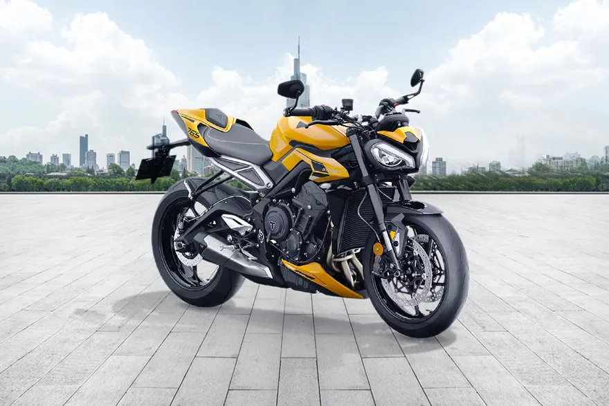

TRIUMPH STREET TRIPLE R 675

The Triumph Street Triple was launched in 2007, to replace the 600 Speed Four. It shares the design of the modern Triumph naked models, introduced on the Speed Triple in 2005, with high-mount twin mufflers, dual circular headlights with a dashboard unit mounted on the top. The biggest difference with the Street Triple is the conventional swingarm, instead of the single-sided unit on the Speed Triple. Many parts are shared with the Triumph Daytona 675, mainly visible on the frame and swingarm. The 675cc three cylinder engine, borrowed from the Daytona 675, is re-tuned to make it more street friendly and usable as a daily rider naked, but still powerful in the category with 79 kW (106 bhp) @ 11,750 rpm. Since the Daytona 675 engine is a triple cylinder, Triumph introduced a new naming instead of adding the displacement to the Speed Triple name, making it a brand new model in Triumph history.
ENGINE
A motorcycle engine is an engine that powers a motorcycle. Motorcycle engines are typically two-stroke or four-stroke internal combustion engines, but other engine types, such as Wankels and electric motors, have been used.Although some mopeds, such as the VéloSoleX, had friction drive to the front tire, a motorcycle engine normally drives the rear wheel, power being sent to the driven wheel by belt, chain or shaft. Historically, some 2,000 units of the Megola were produced between 1921 and 1925 with front wheel drive, and the modern Rokon, an all terrain motorcycle with both wheels driven, has been produced since 1960.Most engines have a gearbox with up to six or even 7 ratios. Reverse gear is occasionally found on heavy tourers, for example the Honda GL1600, and sidecar motorcycles, such as the Ural. The rider changes gears on most motorcycles using a foot-pedal and manual clutch, but early models had hand-levers. More recently, some have automatic or semi-automatic gearboxes, and some using CVT transmission.
TOP SPEED
 MILEAGE AND TOP SPEED Triumph Street Triple R top speed is 220 kmph (approximate).Triumph's Street Triple looked just like the Speed Triple of the time but with the engine out of the Daytona 675 – and it was a revelation. It's light, fast, fun, agile, sounds great, stylish, cool and cheap, too. Overnight the Triumph made its rivals seem like relics.
MILEAGE AND TOP SPEED Triumph Street Triple R top speed is 220 kmph (approximate).Triumph's Street Triple looked just like the Speed Triple of the time but with the engine out of the Daytona 675 – and it was a revelation. It's light, fast, fun, agile, sounds great, stylish, cool and cheap, too. Overnight the Triumph made its rivals seem like relics.
BRAKES
 Dual 308 mm discs Dual Nissin 308 mm discs Dual Nissin 310 mm discs, ABS Dual 310 mm Nissin 2-piston, ABS Dual 310 mm Brembo M4.32 4-piston radial monobloc, ABS (switchable) Dual 310 mm Brembo M50 4-piston radial monobloc, ABS (switchable)220 mm disc Nissin 220 disc Brembo 220 mm disc, ABS Single 220 mm Brembo fixed disc, ABS Single 220 mm Brembo fixed disc, ABS (switchable) Single 220 mm Brembo fixed disc, ABS (switchable)
Dual 308 mm discs Dual Nissin 308 mm discs Dual Nissin 310 mm discs, ABS Dual 310 mm Nissin 2-piston, ABS Dual 310 mm Brembo M4.32 4-piston radial monobloc, ABS (switchable) Dual 310 mm Brembo M50 4-piston radial monobloc, ABS (switchable)220 mm disc Nissin 220 disc Brembo 220 mm disc, ABS Single 220 mm Brembo fixed disc, ABS Single 220 mm Brembo fixed disc, ABS (switchable) Single 220 mm Brembo fixed disc, ABS (switchable)